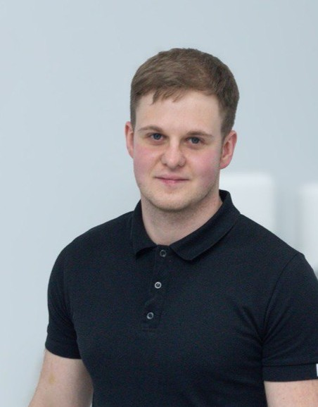

I am a dentist who is currently learning programming and exploring a new direction in my career. I’m happily married to my wife Yuliia, and together we are excitedly waiting for the arrival of our baby daughter. In my free time, I enjoy playing Dota and relaxing with friends while smoking hookah.
I am a dedicated dentist with a strong passion for helping people achieve healthy and confident smiles. I approach my work with precision, care, and a commitment to providing comfortable, high-quality treatment for every patient. Alongside my dental career, I am expanding my skills by studying programming, continually seeking new ways to grow both professionally and personally.
